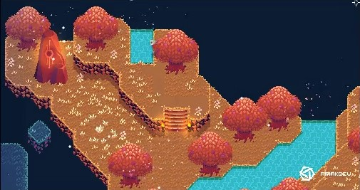
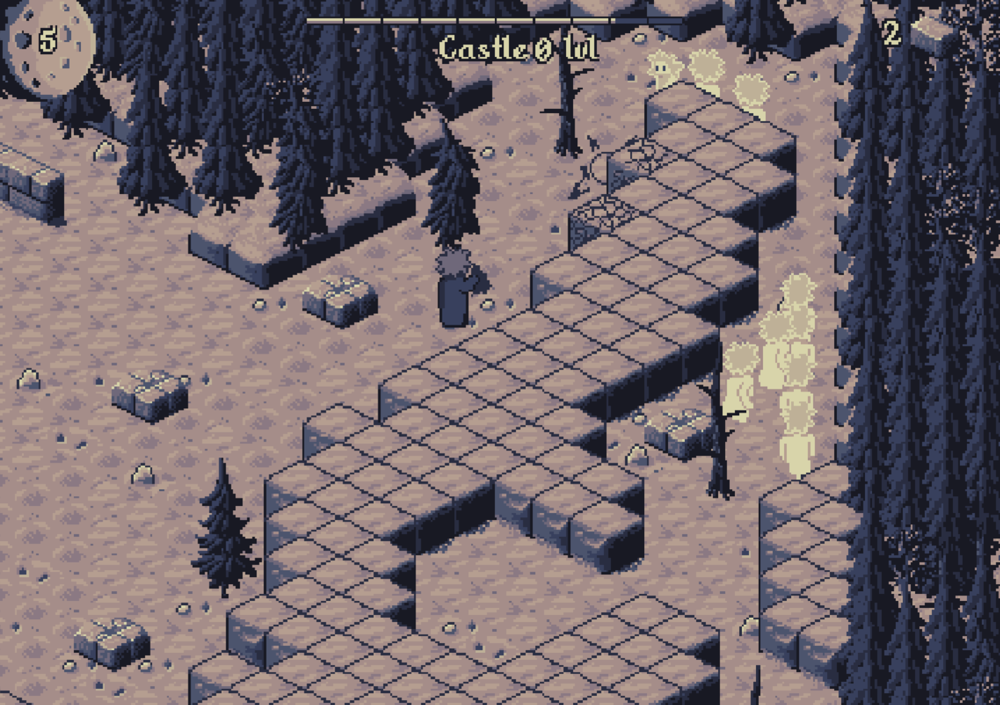

Nazwa gry: Timeport
Opis świata Gry
Świat gry podzielony jest na 3 przestrzenie czasowe:
- początki cywilizacji - dominują tam wydeptane szlaki, lasy, pola, małe osady, namioty z liści, domki z gliny, pierwsze uprawy, itp.
- złoty wiek cywilizacji - dominują tam twierdze, miasta, świątynie, wsie, itp.
- upadek cywilizacji - dominują tam ruiny, wody zanieczyszczone kwasem, skażona atmosefera, ogólny niepokój, itp.
Składa się on z wielu plansz przedstawiających pojedyczne lokalizacje, pomiędzy którymi gracz może swobodnie się przemieszczać.
Niektóre plansze przeznaczone będą do eksploracji, a niektóre stawiać będą przed graczem przeszkody.
Główny Bohater
Bezimienny kandydat na stażystę Komisji Czasoprzestrzennej. W przeciwieństwie do reszty postaci spotkanych podczas rozgrywki jest człowiekiem.
Grafiki koncepcyjne




Gatunek oraz Styl
- Gatunek - Future Fantasy Adventure and Puzzle
- Rodzaj Grafiki - 2.5D, styl wykonania do ustalanie z grafikami
- Widok - Isometryczny
Mechanika wyróżniająca grę
Rozgrywka w kilku przestrzeniach czasowych, pomiędzy którymi gracz może przemieszczać się w dowolnym momencie. Pozwala to na obchodzenie przejść, używanie przedmiotów z jednej przestrzeni w innej, zmianie stanu przestrzeni znajdującej się dalej w przyszłość, itp.
Używane Technologie
- Silnik:
Unity 2021.3.12f1 - Edytor Graficzny: Według uznania grafików
Marketing oraz Monetyzacja
- Grupa Docelowa - Gen z
- Monetyzacja - ...